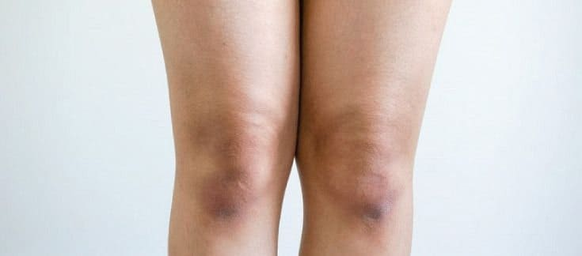
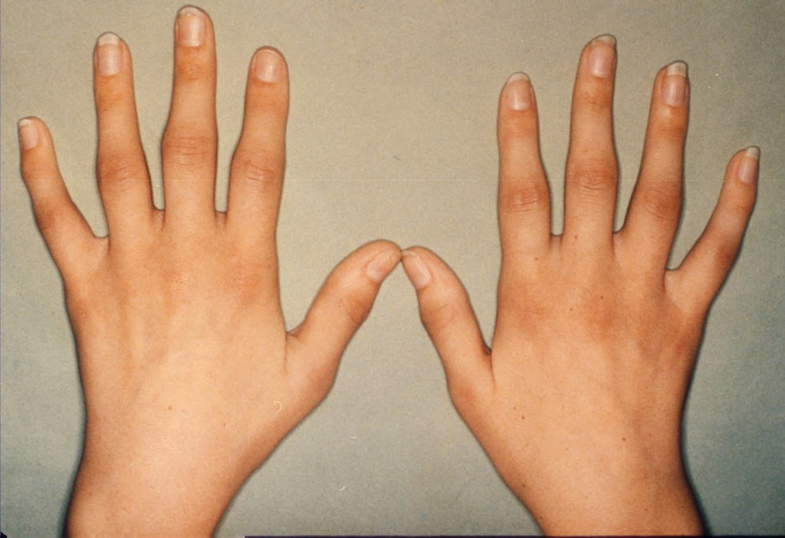

ข้อเข่าเสื่อมไม่ใช่อุปสรรค “คุณสถิตพงษ์ วัย 82 ปี” อดีตข้าราชการวัยเกษียณพลิกชีวิตจากผู้ป่วยโรคข้อเข่าเสื่อมระยะสุดท้าย สร้างปาฏิหาริย์ให้ตนเองจนกลายเป็นเศรษฐีเงินล้าน
ภาพถ่ายคุณปู่สถิตพงษ์ หลังจากรักษาโรคข้อเข่าเสื่อมเรื้อรังจนหายขาด ตอนนี้เขากลายมาเป็นเจ้าของกิจการสวนผักออร์แกนิคส่งออกไปขายทั่วโลก !!!
ผมในวัย 73 ปีไม่คิดฝันเลยว่าจะได้กลับมามีสุขภาพดีเหมือนคนวัยสามสิบสี่สิบได้อีกครั้ง ทั้งความกระปรี้กระเปร่า ความกระฉับกระเฉง และความแข็งแรงหวนกลับคืนสู่ร่างกายทั้งหมด แต่ชีวิตมันไม่ได้สวยหรูแบบนี้มาตั้งแต่แรกหรอกครับ เพราะก่อนหน้านี้ร่างกายของผมเข้าขั้นวิกฤตไปแล้ว
หลังจากใช้ชีวิตเป็นข้าราชการประจำที่จังหวัดนนทบุรีมาเกือบ 50 ปี ด้วยตำแหน่งหน้าที่นายอำเภอทำให้ตลอดช่วงชีวิตการทำงานเหล่านั้น ผมไม่เคยได้หยุดพักอยู่นิ่งเลยสักครั้ง ต้องออกตรวจหมู่บ้าน อำนวยความสะดวกและดูแลความเรียบร้อยในชุมชน ไปจนถึงให้ความช่วยเหลือเรื่องสารทุกข์สุขดิบแก่ประชาชนก็ต้องผ่านผมทุกครั้ง
ซึ่งพออายุย่างเข้าปีที่ 52 การเจ็บป่วยเริ่มก้าวเข้าสู่ชีวิตเป็นที่เรียบร้อย ผมป่วยเป็นโรคเกาต์ เริ่มมีอาการปวดตามข้อนิ้วบ้าง ข้อเข่าบ้าง ข้อเท้าบ้าง แต่กินยาแก้ปวดก็ดีขึ้น พอเกษียณอายุราชการได้ไม่นาน ผมเกิดประสบอุบัติเหตุรถมอเตอร์ไซค์ประสานงานกับรถกระบะเข้าอย่างจัง เหตุการณ์ครั้งนี้ทำให้ร่างกายผมไม่เหมือนเดิมอีกต่อไป เนื่องจากหัวเข่าของผมกระแทกกับกันชนหน้ารถคู่กรณีอย่างเต็มแรง ทำให้เส้นเอ็นหัวเข่าฉีกขาดและหมอนรองกระดูกหัวเข่าแตก
หลังจากอุบัติเหตุครั้งนั้นผมก็กลายเป็นคนเดินขาเป๋ ต้องใช้ไม้เท้าคอยช่วยพยุงเวลาเดินไปไหนมาไหนอยู่ตลอด แต่เหตุการณ์เลวร้ายมันยังไม่จบเพียงเท่านี้ ผมเข้าโรงพยาบาลอีกครั้ง ด้วยอาการปวดหลังที่ลามลงมาจนถึงหัวเข่า แย่ไปกว่านั้น คือ หมอวินิจฉัยว่าผมป่วยเป็นโรคข้อเข่าเสื่อมระยะที่ 3 ซึ่งมาพร้อมกับการปวดบวมอักเสบอย่างถึงที่สุด เดินก็ลำบาก ขึ้นบันไดก็ไม่ได้ เป็นผลพวงลากยาวมาจากอุบัติเหตุครั้งนั้น สุดท้ายตอนอายุ 67 ผมไม่ทันระวังตัวจนลื่นล้มในห้องน้ำ หลังจากนั้นผมไม่สามารถเดินได้อีก กลายเป็นผู้ป่วยนอนติดเตียงตั้งแต่ตอนนั้น ชีวิตผมเหมือนตกนรกทั้งเป็นเลยครับ
ตลอดระยะเวลาเกือบ 30 ปีที่ป่วยเป็นโรคนี้ ผมหมดเงินไปกับค่ารักษาพยาบาลไม่ต่ำกว่าหลักล้านแน่นอน แต่พวกคุณเคยตั้งคำถามกันไหมว่าเงินที่เราเสียไปมากขนาดนั้น ทำไมมันถึงไม่เคยช่วยให้อาการปวดหลัง ปวดเข่าของเราหายไปเสียที จนในที่สุดผมตัดสินใจเปลี่ยนวิธีการรักษาแบบใหม่ ไม่ใช่แค่พึ่งยาจากคุณหมอในโรงพยาบาลที่เอาแต่เลี้ยงไข้อีกต่อไปแล้ว
เมื่อผมเปิดใจรักษาด้วยวิธีนี้เพียงแค่ 3 เดือน อาการป่วยที่เคยเป็นมาทั้งหมดในชีวิตผมก็หายเป็นปลิดทิ้ง ทั้งกระดูกสันหลัง สะโพก หัวเข่า ไปจนถึงข้อเท้า กลับมามีความรู้สึกได้อีกครั้ง ไม่มีอาการปวดเกิดขึ้นรบกวนการใช้ชีวิตของผมอีกเลย
แม้เขาจะประสบอุบัติเหตุและหกล้มในห้องน้ำ แต่ทำไมคุณโอภาสถึงหลุดพ้นจากการเป็นผู้ป่วยติดเตียงและกลับมาใช้ชีวิตแข็งแรงเหมือนคนปกติอีกครั้งได้ ปาฏิหาริย์หรือรักษาตรงจุดกันแน่ ?!
บอกเลยว่าสมัยก่อนผมใช้ชีวิตสุดเหวี่ยงมาก ตั้งแต่เข้ารับราชการผมก็ตะลุยงานหนักวันละไม่ต่ำกว่า 12 ชั่วโมง ตลอดระยะเวลา 30 กว่าปี วันไหนดีหน่อยก็ได้นั่งทำงานอยู่ในสำนักงานอำเภอ คอยเซ็นเอกสาร แต่บอกเลยว่าแทบไม่มีหรอกครับ ! ความจริงมันตรงกันข้ามเลยเพราะผมเดินทั้งวัน ไปบ้านนู้นทีบ้านนี้ที ออกตรวจความสงบเรียบร้อยบ้าง บุกตรวจจับสิ่งผิดกฎหมายบ้าง เน้นดูแลความปลอดภัยให้กับประชาชนในชุมชนครับ
สมัยนั้นพอมีเวลาว่างยังได้ออกไปวิ่งกับภรรยา เข้าร่วมแข่งขันวิ่งมาราธอนมากเท่าที่จะทำได้ เพราะร่างกายยังไหว แต่ก็ไม่รู้เลยว่าที่ตัวเองทำอยู่มันผิดวิธีมาก เกินพลังกำลังร่างกายของเรา จนมันดันไปกระทบข้อเข่านี่แหละครับ เหมือนกับว่ามีความสุขมากจนลืมดูแลตัวเอง วิ่งโดยไม่สนใจเลยว่าร่างกายจะเป็นอย่างไร
ร่างกายผมมันเริ่มแย่ลงตั้งแต่ช่วงอายุได้ 52 ผมไม่สามารถวิ่งหรือเดินไกลเหมือนเมื่อก่อนได้อีก เดินไปได้สักพักจะปวดตามข้อเท้ากับข้อเข่ามากจนต้องหาที่นั่งพัก จึงตัดสินใจไปหาหมอที่โรงพยาบาล หมอตรวจแล้วบอกว่าผมเป็นโรคเก๊าท์กับโรคข้อเข่าเสื่อมระยะแรก หมอเตือนแค่ให้ระมัดระวังเรื่องการกินมากขึ้นเท่านั้น โดยไม่ได้รักษาอะไรให้เลยแม้แต่น้อย
พอถึงวัย 60 ที่ผมต้องเกษียณก็รู้สึกดีใจว่าจะได้ใช้ชีวิตอย่างสุขสบายเสียที แต่ระหว่างทางที่ผมกำลังขับมอเตอร์ไซค์กลับบ้านไปหาภรรยา อยู่ดีๆ ก็มีรถกระบะคันนึงหักเลี้ยวมาโดยไม่ทันมองเห็นจึงพุ่งเข้าชนร่างผมเข้าอย่างจัง เข่าผมกระแทกกับกันชนหน้าและร่างกระเด็นไปไกลเกือบ 100 เมตร ทั้งเส้นเอ็นหัวเข่าฉีกขาดและกระดูกหัวเข่าแตกละเอียด นอนโรงพยาบาลอยู่เกือบเดือน หลังจากนั้นได้สี่ปี หมอก็วินิจฉัยว่าผมเป็นโรคข้อเข่าเสื่อมระยะที่ 3 ทำให้ผมต้องพึ่งไม้เท้าเวลาไปไหนมาไหน ต้องย้ายตนเองลงมานอนชั้น 1 ของบ้าน เพราะรู้สึกฝืดเวลาเดินและปวดขามากตลอดทั้งวัน ไม่สามารถเดินขึ้นบันไดหรือยืนนานๆ ได้อีก พอไม่กินยาแก้ปวดหรือไม่ได้นวดก็จะปวดจนทนไม่ได้ ตั้งแต่นั้นผมก็ไม่เคยได้ใช้ชีวิตเหมือนคนปกติอีกเลย
มีครั้งหนึ่งที่ผมกับภรรยาไปสวนสาธารณะด้วยกัน เธอออกมาวิ่งที่นี่ทุกเย็นอยู่แล้ว ผมติดมาด้วยแค่วันนี้เท่านั้น ซึ่งผมเดินไปได้สักพักก็ต้องหยุดนั่ง ส่วนเธอยังแข็งแรงดี วิ่งปร๋อไปไกล มีแต่ผมที่ไม่ได้วิ่งเคียงข้างเธอเหมือนเมื่อก่อนอีกต่อไปแล้ว ผมได้แต่มองและนั่งอยู่ที่เดิม มันเศร้าจริงๆครับ พอกลับมาถึงบ้านไม่นานก็เหมือนสิ่งเลวร้ายทุกอย่างถาโถมมาหา ผมพลาดท่าลื่นล้มก้นกระแทกในห้องน้ำ ขยับตัวลุกขึ้นไม่ได้ ร่างกายแข็งทื่อจนภรรยาและลูกต้องรีบหามไปส่งโรงพยาบาลทันที
ผมถูกวินิจฉัยว่ามีอาการหมอนรองกระดูกกดทับเส้นประสาท อาการแรกเริ่มมันจะชาตามปลายนิ้วมือนิ้วเท้า จากนั้นแขนขาเริ่มไม่มีแรง หยิบจับอะไรไม่ค่อยได้ จนท้ายที่สุดความรู้สึกบริเวณอวัยวะส่วนล่างของผมก็ไร้ความรู้สึกไปแล้วและไม่สามารถขยับตัวเคลื่อนไหวได้อีก หรือที่รู้จักกันว่า อัมพฤกษ์ นั่นแหละครับ นรกบนดินเกิดขึ้นกับตัวผมแล้วในวัย 67 ปี แม้อวัยวะร่างกายส่วนบน แขน มือ ใบหน้ายังขยับได้ปกติ ลุกมากินข้าวและช่วยเหลือตัวเองได้บ้าง แต่ก็ไม่สามารถไปไหนมาไหนตามใจตัวเองได้อีก อยู่แต่ในห้องแคบๆ อยากจะเข้าห้องน้ำก็ต้องพึ่งพาคนอื่น รู้สึกเหมือนเป็นตัวภาระเลยครับ
ระหว่างรักษาตัวมาตลอดหลายปี ผมไม่เห็นว่าอาการปวดที่หัวเข่าหรือหมอนรองกระดูกของผมมันจะดีขึ้นตรงไหน ทั้งที่กินยาทุกวัน วันละไม่ต่ำกว่า 15 เม็ด ทายาทุกเช้า กลางวัน เย็น หากเผลอลืมหรือทานยาไม่ครบตามจำนวน ความทรมานขั้นสูงสุดก็จะเกิดขึ้นกับร่างกายของผมทันทีในเวลาเพียงไม่กี่ชั่วโมง ไม่เคยได้นอนหลับสนิทสักวัน อาการปวดมันรุมเร้าผมอยู่อย่างนั้น ไม่เคยดีขึ้นและไม่เคยหายไปเลย
ผมหมดศรัทธากับบุคลากรทางการแพทย์และวงการสาธารณสุขแล้วครับ หมอบางท่านยังไม่รู้เลยว่าควรรักษาอาการป่วยของผมอย่างไร นัดตรวจ 3 เดือนครั้งนึงก็ได้แต่ยาแบบเดิมๆ กับการพูดคุยกันเพียงไม่กี่ประโยค เลี้ยงไข้ให้ผู้ป่วยซื้อยากินไปเรื่อยๆ การรักษาแบบขอไปที ปล่อยให้ผู้ป่วยนอนจมอยู่กับความเจ็บปวดในชีวิตแบบนี้ต่อไป คอยหวังแต่จะเอาเงินและรอคาบผลประโยชน์จากผู้ป่วยอย่างเราแบบนี้แหละครับ
จากใช้ไม้เท้าพยุงสู่คนพิการนั่งรถเข็น และในที่สุดก็กลายเป็นผู้ป่วยติดเตียง
ผมกลายเป็นผู้ป่วยติดเตียงที่ช่วยอะไรตัวเองไม่ได้เลย ผมคิดแล้วว่านับแต่นี้ต่อไปต้องเป็นภาระของภรรยาแน่ๆ เธอไม่จำเป็นต้องมาอุทิศเวลาทั้งชีวิตเพื่อดูแลคนป่วยอย่างผม เธอควรมีความสุขกับบั้นปลายของเธอ แต่ผมก็ไม่คิดว่าเธอจะไปจากผมจริงๆ
วันหนึ่งเธอออกจากบ้านไปและไม่หวนกลับคืนมาอีก เธอให้เหตุผลว่าไม่อยากจมอยู่กับคนอย่างผม เธออายที่ต้องคอยบอกทุกคนว่าสามีเป็นป่วยอะไร สามีไม่สามารถช่วยตนเองได้แล้วหรือ ความรักของเราก็จืดจางลงเรื่อยๆ ไม่เหมือนสมัยก่อนมาหลายปีแล้ว ผมมาทราบภายหลังว่าเธอพบรักครั้งใหม่กับนักวิ่งอายุรุ่นราวคราวเดียวกันในสวนสาธารณะที่เธอไปวิ่งทุกเย็น หัวใจผมแหลกสลาย อยากออกไปตามเธอก็ทำไม่ได้ ผมทำได้แค่นอนร้องไห้จากความเจ็บปวดที่มาจากทั้งทางกายและจิตใจ สุดท้ายแล้วผมก็อาศัยอยู่กับลูกชายและลูกสะใภ้
แต่แล้วก็เหมือนผลบุญที่ผมสั่งสมมาทั้งชีวิตก็ได้เกิดปาฏิหาริย์ขึ้นแล้วในครั้งนี้ ซึ่งนับว่าโชคดีจริงๆ ที่เพื่อนของลูกชายผมมีเวลาว่างแวะมาเยี่ยมเยียนดูอาการ ไม่อย่างนั้นป่านนี้ผมคงนอนตายไปแล้ว เขาชื่อ อาจณรงค์ เป็นนายแพทย์ประจำอยู่ศูนย์วิจัยและพัฒนาการรักษาโรคทางกระดูกและข้อต่อแห่งหนึ่งในกรุงเทพ เขารีบบอกให้ผมเข้ารับการรักษาอาการหมอนรองกระดูกอักเสบและภาวะข้อเข่าเสื่อมโดยทันที ผมชั่งใจอยู่นานเพราะวิธีการรักษาแบบที่เขาเล่าให้ฟังผมไม่เคยได้ยินมาก่อน
เขาอธิบายขั้นตอนการรักษาคร่าวๆ ให้ฟังว่า ต้องเริ่มจากการกำจัดมวลสิ่งสกปรกและชำระล้างทำความสะอาดน้ำในไขข้อให้กลับมาสะอาดเหมือนใหม่อีกครั้งก่อน เนื่องจากน้ำในข้อต่อเป็นองค์ประกอบสำคัญที่ช่วยลดแรงเสียดทานไม่ให้กระดูกแต่ละชิ้นกระทบกันโดยตรง ทั้งยังสามารถรองรับและลดแรงกระแทกขณะเคลื่อนไหวได้เป็นอย่างดี ซึ่งเราจะรู้ได้ว่าสิ่งสกปรกเกิดขึ้นหรือปริมาณน้ำในข้อต่อลดลง ก็ต่อเมื่อพบเจออาการฝืดเคืองที่หัวเข่าจนรู้สึกว่าเคลื่อนไหวได้ไม่สะดวกเท่าเดิม ประกอบกับมีอาการปวดบวมเกิดขึ้น ซึ่งอาจเป็นผลมาจากการความสกปรกและการใช้งานข้อต่อกระดูกอย่างหนักสะสมมาเป็นเวลานาน แม้สิ่งที่ปรากฏออกมาจะมีเพียงแค่อาการปวด แต่ไม่ได้หมายความร่างกายของคุณจะเจ็บป่วยแค่นั้น ไม่แน่ว่าเนื้อเยื่อภายในของคุณอาจถูกทำลายไปเรียบร้อยแล้วจากโรคร้ายที่แฝงอยู่กับตัวคุณมาอย่างยาวนาน
ผลิตภัณฑ์ที่เขาผมแนะนำ มีชื่อว่า B-Joint ที่ผ่านการคิดค้นสูตรตลอดระยะเวลา 5 ปีและผ่านการทดลองมาไม่ต่ำกว่า 1,000 ครั้ง จนออกมาเป็นผลิตภัณฑ์ที่อุดมไปด้วยสมุนไพรจากธรรมชาติ 100% และปราศจากผลข้างเคียงใดๆ ที่ไม่ได้มุ่งแต่รักษาอาการเสื่อมสภาพของกระดูกเท่านั้น แต่ยังเข้าไปเพิ่มระดับภูมิคุ้มกันภายในร่างกาย ขจัดความเจ็บปวดเรื้อรัง ลดการอักเสบ เสริมสร้างปริมาณคอลลาเจนและแคลเซียมจำเป็นต่อมวลกระดูก เร่งกระบวนการสร้างเนื้อเยื่อเซลล์กระดูกอ่อนชนิดใหม่ ถือเป็นการคืนสภาพการเคลื่อนไหวข้อต่อของผู้ป่วยให้ดียิ่งขึ้น ทั้งยังสามารถลดอัตราการเกิดภาวะกระดูกเปราะหรือกระดูกพรุนในผู้สูงอายุได้เป็นอย่างดี
ผลการวิจัยในปี 2563 ที่ผ่านมาจากกลุ่มผู้ร่วมทดลอง B-Joint ทั่วประเทศกว่า 4,289 คน แสดงให้เห็นถึงผลลัพธ์อันน่าเชื่อถือ ดังนี้
ผู้ร่วมทดลอง 97% ได้รับการชำระล้างสิ่งสกปรกจากภายในและฟื้นฟูจำนวนน้ำในไขข้อให้กลับมาอยู่ในระดับสมดุลได้อีกครั้ง
ผู้ร่วมทดลอง 93% ไม่พบเจอกับอาการเจ็บปวดหรือภาวะกระดูกบวมอักเสบอีกเลย หลังจากทานครบตามคำแนะนำ
ผู้ร่วมทดลอง 88% รู้สึกถึงความคล่องตัวในการใช้ชีวิตมากขึ้น เซลล์กระดูกอ่อนได้รับการดูแล
ผู้ร่วมทดลอง 82% หลุดพ้นจากโรคเรื้อรังที่มีสาเหตุมาจากกระดูกและข้อต่อโดยสมบูรณ์
ผู้ร่วมทดลอง 75% ภาวะกระดูกโก่งงอผิดรูปกลับคืนสู่สภาพดังเดิม
ซึ่งจากสถิติของการวิจัยทำให้ผมตัดสินใจรักษาด้วยวิธีนี้ เพื่อพิสูจน์ผลลัพธ์เหล่านั้นด้วยตนเอง เพราะถ้าไม่ใช้วิธีนี้ชีวิตผมก็คงไม่มีทางเลือกอื่นที่ดีไปมากกว่านี้แล้ว คงได้นอนรอความตายไปวันๆ แม้ต้นตอของปัญหาจะเกิดมาจากตัวผมเองที่ดูแลตัวเองช้าไปจนปล่อยปละละเลยกับร่างกายมาเกือบ 30 ปี แต่มันก็ไม่ใช่ความผิดของผมเพียงคนเดียว เพราะหากระบบสาธารณสุขของบ้านเรามันเอื้อแก่การรักษามากกว่านี้ ประเทศไทยก็คงไม่มีตัวเลขผู้ป่วยจากโรคทางกระดูกและข้อต่อเพิ่มขึ้นมากมายถึงขนาดนี้หรอกครับ
เขาแนะนำเพิ่มเติมอีกว่าการทำความสะอาดน้ำในไขข้อนี้ ผู้ที่มีอายุ 40 ปีขึ้นไปควรทำเป็นอย่างยิ่ง หากอวัยวะในร่างกายของคุณผ่านการใช้งานมาอย่างหนักหน่วง ยิ่งต้องรีบดูแลร่างกายโดยด่วน เพราะยิ่งเข้ารับการบำบัดด้วยวิธีนี้เร็วก็จะยิ่งป้องกันการเกิดโรคทางกระดูกได้ขึ้นมากเท่านั้น อย่างน้อยก็สามารถยืดเวลาชีวิตของคุณออกไปได้อีก 5-10 ปี
ฟื้นคืนชีวิต พลิกสภาพสู่ความแข็งแรง
สำหรับผลิตภัณฑ์ B-Joint ได้รับการยืนยันจากองค์การอาหารและยาแห่งเอเชียแล้วว่ามีประโยชน์ต่อการฟื้นฟูเซลล์กระดูกและบำบัดอาการภายในไขข้อได้อย่างมีประสิทธิภาพ สมัยก่อนประเทศเราอาจไม่มีผลิตภัณฑ์ที่อุดมไปด้วยสมุนไพรธรรมชาติ ที่ผ่านกรรมวิธีการผลิต การสกัด และบรรจุออกมาในรูปแบบครีมทาภายนอก เพื่อสะดวกแก่การใช้งาน ปลอดภัย และสามารถเข้าถึงการทำความสะอาดข้อต่อได้ง่ายด้วยตนเองที่บ้าน ผู้ที่ประสบปัญหาเกี่ยวกับความผิดปกติทางกระดูก อาการเจ็บปวด โรคไขข้อเสื่อม หรือภาวะกระดูกอักเสบเปราะบางจนกระทบกับการใช้ชีวิตประจำวัน ผมแนะนำให้รีบใช้วิธีนี้โดยด่วนก่อนร่างกายของคุณจะแย่เท่าผม !
ผมใช้เวลาราว 1 ปีเท่านั้นก็กลับมาเดินเหินได้เหมือนคนปกติอีกครั้ง ด้วยความที่ผมป่วยหนักมากขนาดนี้เลยใช้เวลานานกว่าคนทั่วไป จริงๆ แล้ว การบำรุงด้วย B-Joint ใช้เวลาเพียงแค่ 3 เดือนเท่านั้น ช่วง 1 เดือนแรกที่ทา อาการนอนปวดจนร้องโอดโอยของผมหายไปเป็นปลิดทิ้ง ผมกลับมานอนหลับสนิทตลอดคืนได้อีก โดยไม่ต้องพึ่งยาแก้ปวดอีกต่อไป
พอเข้าสู่เดือนที่ 2-3 เนื้อครีมจะสะสมซึมลึกเริ่มเข้าสู่กระบวนการชำระล้างทำความสะอาดสิ่งสกปรกให้ออกไปจากอวัยวะตามข้อต่างๆ และทดแทนน้ำชนิดใหม่เข้าสู่ไขข้ออีกครั้ง เราจะรับรู้ได้จากการอาการฝืดเคืองหรือความรู้สึกที่เคยติดขัดขณะยืดงอขาเริ่มหายไป จนสามารถขยับเคลื่อนไหวได้คล่องตัวมากขึ้น ผู้ใช้วิธีการรักษานี้หลายรายมักสิ้นสุดและหายขาดจากโรคทางกระดูก รวมถึงอาการปวดต่างๆ ตั้งแต่การทานครบ 3 เดือนตามคำแนะนำของผู้เชี่ยวชาญแล้วครับ
แต่ด้วยความที่ผมป่วยหนักจึงอยากรักษาครั้งเดียวให้เห็นผลระยะยาวจึงตัดสินใจทาต่อไป ในช่วง 4-6 เดือน ถือเป็นช่วงที่ร่างกายเริ่มเสริมสร้างเซลล์กระดูกอ่อนชนิดใหม่ขึ้นมา จากนั้นจะเข้าไปซ่อมแซมเนื้อเยื่อที่ตายแล้ว และเร่งคืนสภาพกระดูกข้อต่อผิดรูปให้ค่อยๆ เข้าที่เข้าทางกลับคืนสู่สภาพเดิม ทั้งนี้ยังช่วยเพิ่มความแข็งแรงของมวลกระดูกไม่ให้เปราะหรือพรุนอีกในอนาคต
ซึ่งใครยิ่งอาการน้อยยิ่งรักษาให้หายได้เร็วกว่านี้อีกนะครับ แต่เนื่องจากผมป่วยขั้นรุนแรงจึงต้องเข้ารับการทำกายภาพบำบัดต่อไปอีกราว 6 เดือน แต่ร่างกายผมค่อยๆ ดีขึ้น พอช่วงล่างของผมกลับมามีความรู้สึกได้ก็เริ่มจากการฝึกเดินแล้วค่อยเพิ่มระยะทางไปเรื่อยๆ ตอนนี้ก็กลับมาเดินไปไหนมาไหนด้วยตัวเองแบบปกติได้อีกครั้งแล้วครับ
ผมอยากกล่าวขอบคุณทั้งนักวิจัย บุคลากรทางการแพทย์ และผู้ผลิต B-Joint จากใจจริงเลยครับ ที่เหมือนชุบชีวิตให้กับตัวผมอีกครั้ง ที่อยากขอบคุณที่สุดเลยคือ ทำให้ครอบครัวของผมกลับมาอยู่ด้วยกันแบบพร้อมหน้าพร้อมตาได้เหมือนเดิมอีกครั้ง ภรรยาเธอกลับมาหาผมแล้วและเราให้คำสัญญาต่อกันว่าจะไม่แยกจากกันไปไหนอีกจนถึงวันตาย ชีวิตนี้คงไม่มีอะไรดีเท่ากับการหายป่วยและได้ต่อเวลาชีวิตเพื่ออยู่กับคนที่เรารักอีกแล้วใช่ไหมล่ะครับ
ตอนนี้ผมเดินหน้าเต็มกำลังในการกลับมาดูแลสวนผักออร์แกนิคที่ปล่อยให้ลูกชายรับผิดชอบมาตลอดระยะเวลาที่ป่วย ต้องขอบคุณมากจริงๆ ครับ เพราะพอร่างกายผมดีขึ้นก็เริ่มส่งผักเข้าประกวดในเทศกาลผัก-ผลไม้นานาชาติ จนได้รับเครื่องหมายการันตีคุณภาพระดับสากลทำให้สามารถส่งออกผักออร์แกนิคพวกนี้ไปขายได้ทั่วโลก ยอดขายถล่มทลายและราคาดีมาก เดือนนี้ส่งออกไปแล้วเกือบ 30 ตันครับ แล้วยังได้กลับมาทำหน้าที่คุณปู่ที่ดีของลูกๆ หลานๆ อีก มีเวลาพาพวกแกขับรถไปซื้อขนมไปวิ่งเล่น ที่สำคัญผมได้ลบความรู้สึกของการเป็นตัวภาระออกไปจากความคิดแล้ว
ผมไม่อยากให้ทุกคนยอมแพ้กับการดูแลตัวเองนะครับ ร่างกายเรามีร่างเดียวต้องดูแลให้ถึงที่สุด เราสามารถหายป่วยและกลับมามีร่างกายที่แข็งแรงได้ อย่ายอมแพ้นะครับ เปิดใจให้กับ B-Joint แล้วผลลัพธ์ที่คุณได้มันจะคุ้มค่ายิ่งกว่าเงินที่คุณเสียไปอย่างแน่นอนครับ!
โปรดอ่าน! ประชาสัมพันธ์สำหรับผู้ที่สนใจ B-Joint เนื่องจากช่วงนี้มีการจัดโปรโมชั่นร่วมสนุก เพื่อลุ้นรับส่วนลดราคาพิเศษมากถึง 50% โดยเริ่มตั้งแต่วันนี้ จนถึงวันที่ นี้นะครับ ใครสนใจก็อย่ารอช้า เพราะสินค้าราคาพิเศษมีจำนวนจำกัดและกำลังเป็นที่ต้องการในตลาดมาก!!!
***โปรดให้ข้อมูลการสั่งซื้อในเว็บไซต์ทางการนี้เท่านั้น เพื่อป้องกันสินค้าของปลอมและการเกร็งกำไรจากผู้ไม่หวังดี***
โปรดทราบ!
ตอนนี้กำลังมีการจับรางวัลเพื่อส่วนลดเพิ่มเติมสำหรับ
B-Joint
ใช้โชคที่มีของคุณและกดปุ่ม "หมุน" ถ้าโชคดี
คุณจะสามารถสั่งผลิตภัณฑ์ได้ในราคาพิเศษ! ขอให้คุณโชคดี!

 หมุน
หมุน990฿
สินค้ามีจำนวนจำกัด! โปรดกรอกชื่อและเบอร์โทรศัพท์ เพื่อรับสินค้าในราคาโปรโมชั่น
ความคิดเห็น

ณฤพงษ์ เชียงราย
อ่านบทความนี้จบปุ๊บ ก็รู้เลยว่าตัวผมเองก็ไม่ได้แตกต่างจากคุณยายสักเท่าไหร่ ผมเองก็ไม่เคยได้ยินวิธีการรักษาแบบนี้จากหมอเหมือนกัน ดีตรงที่ไม่ต้องไปหาสมุนไพรเอง ไม่ต้องเสียเวลา เพราะ B-Joint รวมเอาไว้ทุกอย่างไว้ในหลอดนี้แล้ว ผมสั่งไปแล้ว เดี๋ยวจะลองใช้ดูบ้างครับ
อนุรักษ์ นครศรีธรรมราช
ผมก็สั่งไปแล้วเหมือนกัน ได้ยินชื่อ B-Jointมาก่อนหน้านี้ มีคนรู้จักคนนึงเล่าให้ฟังเค้าบอกว่าใช้ดี แต่ว่าตอนนั้นผมไม่รู้ว่าจะต้องไปซื้อที่ไหน ตอนนี้รู้แล้ว แถมได้ส่วนลดด้วย
พรรณราย อุตรดิตถ์
ขอบคุณค่ะ ตอนนี้ฉันรอของมาส่งอยู่
หฤทัย ลำพูน
ครีมตัวนี้ดีมากๆเลย ดิฉันไม่เคยเป็นอะไรรุนแรงจนถึงขั้นต้องนั่งรถเข็น
แต่ว่าหลังนี่ปวดมาเป็น 10 ปีแล้ว แล้วก็ไม่มีหมอคนไหนที่ช่วยได้เลยสักคน
กินยาเป็นกำๆ แล้วก็ไม่มีอะไรดีขึ้น ลองไปซื้อ B-Joint
มาทา ผ่านไป 2
สัปดาห์อาการปวดหายเลย เหลือเชื่อมากๆ ขอบคุณสำหรับครีมทาดีๆ
แบบนี้นะคะ

ยิ่งยศ พัทยา
ใช้มาแล้วสองสัปดาห์ อาการปวดที่เข่าหายไป ตอนนี้รู้สึกว่าตัวเองสภาพร่างกายแข็งแรงกว่าเมื่อก่อน ตอนเช้าออกไปวิ่งได้แล้ว สั่งไป 2 หลอด มาเก็บไว้เผื่อต้องใช้ แนะนำให้ลองใช้กันดูครับ
จรัส เชียงใหม่
เพื่อนบ้านเคยเล่าให้ฟัง เขาบอกว่าใช้ดี
หมอที่รู้จักของเขาแนะนำว่าให้ใช้ผลิตภัณฑ์ตัวนี้
ตอนที่เค้าซื้อไปไม่ได้ซื้อตอนลดราคาด้วย เค้าจ่ายไปเยอะพอสมควร
เดี๋ยวจะลองไปบอกให้มาซื้อทางนี้จะได้ส่วนลด
น้ำหวาน แพร่
ชอบผลิตภัณฑ์ B-Jointตัวนี้ก็ตรงส่วนประกอบนี่แหละ เท่าที่อ่านนี่คือนวัตกรรมใหม่ที่เกิดขึ้นในปี 2020 ตัวนี้มีราคาแพงมากๆ
ดวงกมล อุดรธานี
เสียดายที่ผลิตภัณฑ์ดีๆ แบบนี้จะหายไป ไม่รู้ว่าพวกหมอเค้าคิดอะไรกันอยู่นะ
แววดาว กรุงเทพ
นี่ดิฉันอายุ 50 ปี วิ่งกิโลเดียวก็เหนื่อยแล้ว ขยับตัวไปไหนยังเหนื่อยจะตาย เป็นแบบนี้แล้วต้องลองสั่งดูบ้าง
จามจุรี กาฬสินธุ์
กระดูกและข้อเป็นส่วนประกอบที่สำคัญของร่างกายเราเช่นเดียวกันกับระบบหลอดเลือด ถ้าใส่ใจและดูแลรักษาได้ทันเวลา มั่นใจเลยว่าจะสามารถมีชีวิตอยู่ได้อีก 100 ถึง 120 ปี ขอบคุณมากๆ นะคะสำหรับผลิตภัณฑ์นวัตกรรมใหม่
สุภาพร ปากเกร็ด
น่าสนใจจัง คงต้องลองบ้างแล้ว
แก้วตา นครพนม
ดิฉันใช้วิธีการดูแลร่างกายแบบนี้มา 15 ปีแล้ว แต่นี่เพิ่งจะมารู้ว่าเขามีครีมสูตรใหม่ที่ทำจากสมุนไพรที่ใช้อยู่ อยากจะบอกว่ารูปแบบการรักษาแบบนี้ช่วยได้จริงๆ ค่ะ
คนึงนิตย์ เชียงราย
ขอบคุณมากๆ ค่ะ สั่งซื้อได้ทันช่วงลดพอดี
แจ่มจันทร์ แม่ฮ่องสอน
ทาผลิตภัณฑ์นี้ไปแค่ 5 วันเอง วันนี้รู้สึกว่าตื่นมาแล้วไม่มีอาการปวดที่ข้อเลย แถมวันนี้ยังไม่ได้กินยาอะไรช่วยเลยด้วย หวังว่ามันจะช่วยรักษาให้หายขาดได้จริงๆ กับอาการปวดข้อของดิฉัน
